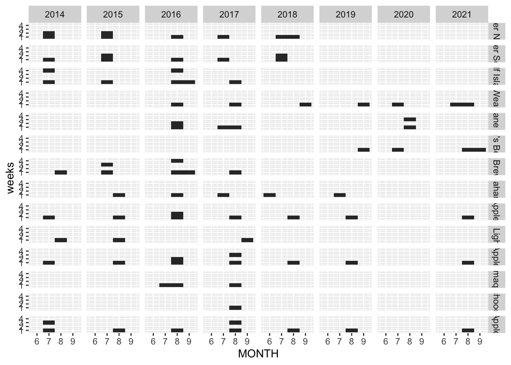
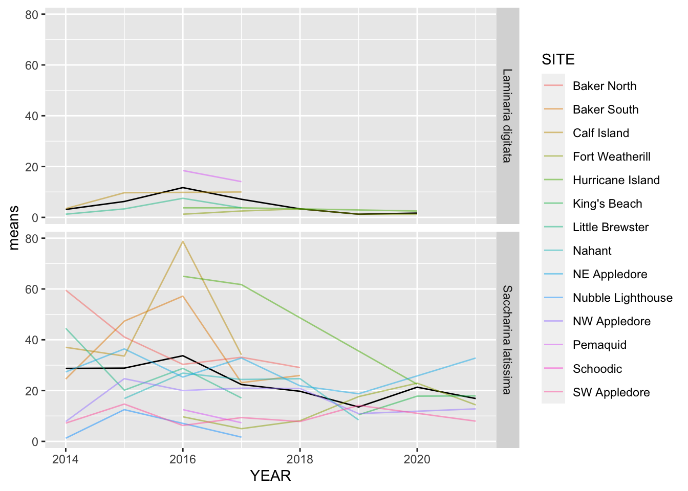
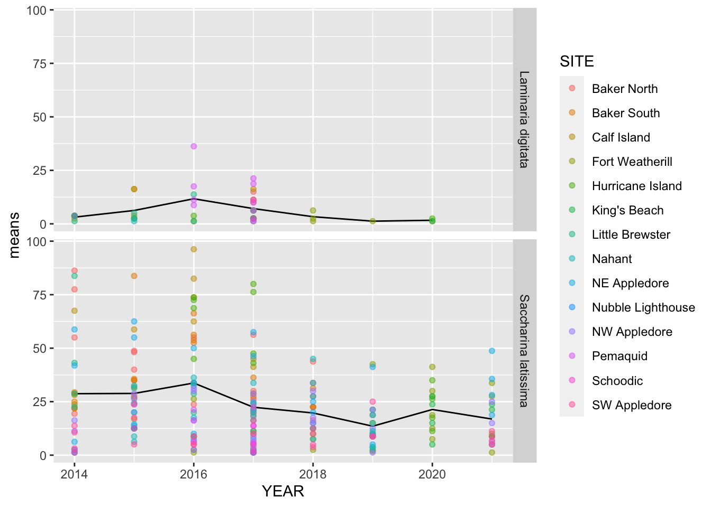
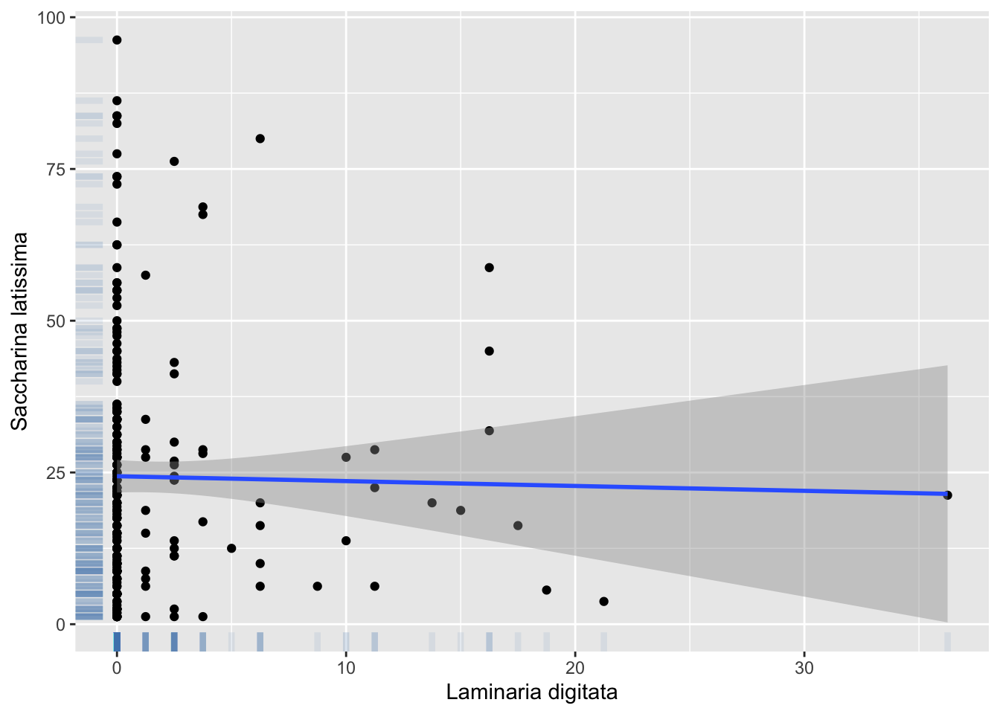
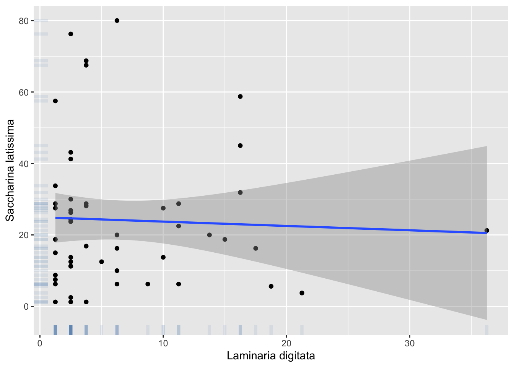

# load libraries
library(pacman)
pacman::p_load(dplyr, janitor, skimr, lubridate, tidyr, readxl, tibble, readr, visdat)Homework Week 3
1. Load me.
The URL of the data is https://github.com/kelpecosystems/observational_data/blob/master/cleaned_data/keen_cover.csv?raw=true - use the readr library to load it in. Show me that you can do it both without downloading it and if you download it.
#Load data
data <- read_csv("https://github.com/kelpecosystems/observational_data/blob/master/cleaned_data/keen_cover.csv?raw=true")Rows: 6222 Columns: 21
── Column specification ────────────────────────────────────────────────────────
Delimiter: ","
chr (17): NETWORK, PI, SITE, TRANSECT, SP_CODE, GROUP, DIVISION.FAMILY, COMM...
dbl (4): YEAR, MONTH, DAY, PERCENT_COVER
ℹ Use `spec()` to retrieve the full column specification for this data.
ℹ Specify the column types or set `show_col_types = FALSE` to quiet this message.2. Format
Take a look at the data in any way you see fit to be able to tell me if the data is in a wide or long format. Justify your answer.
# check structure data
str(data)spc_tbl_ [6,222 × 21] (S3: spec_tbl_df/tbl_df/tbl/data.frame)
$ NETWORK : chr [1:6222] "KEEN ONE" "KEEN ONE" "KEEN ONE" "KEEN ONE" ...
$ PI : chr [1:6222] "Byrnes" "Byrnes" "Byrnes" "Byrnes" ...
$ YEAR : num [1:6222] 2014 2014 2014 2014 2014 ...
$ MONTH : num [1:6222] 7 7 7 7 7 7 7 7 7 7 ...
$ DAY : num [1:6222] 8 8 8 8 8 8 8 8 8 8 ...
$ SITE : chr [1:6222] "Baker North" "Baker North" "Baker North" "Baker North" ...
$ TRANSECT : chr [1:6222] "1" "1" "1" "1" ...
$ SP_CODE : chr [1:6222] "ANSP" "B" "BA" "BL" ...
$ PERCENT_COVER : num [1:6222] 2.5 7.5 2.5 10 21.2 ...
$ GROUP : chr [1:6222] "Invertebrate" "Substrate" "Invertebrate" "Substrate" ...
$ DIVISION.FAMILY : chr [1:6222] "Molluscs" NA "Arthropods" NA ...
$ COMMON.DIVISION.NAME: chr [1:6222] "Bivalves" NA "Crustaceans" NA ...
$ SIZE : chr [1:6222] NA NA NA NA ...
$ COMMON.NAME : chr [1:6222] "jingle shell" NA NA NA ...
$ KINGDOM : chr [1:6222] "Animalia" NA NA NA ...
$ PHYLUM : chr [1:6222] "Mollusca" NA NA NA ...
$ CLASS : chr [1:6222] "Bivalvia" NA NA NA ...
$ ORDER : chr [1:6222] "Pectinida" NA NA NA ...
$ FAMILY : chr [1:6222] "Anomiidae" NA NA NA ...
$ GENUS : chr [1:6222] "Anomia" NA NA NA ...
$ SPECIES : chr [1:6222] "Anomia" NA "Barnacle" NA ...
- attr(*, "spec")=
.. cols(
.. NETWORK = col_character(),
.. PI = col_character(),
.. YEAR = col_double(),
.. MONTH = col_double(),
.. DAY = col_double(),
.. SITE = col_character(),
.. TRANSECT = col_character(),
.. SP_CODE = col_character(),
.. PERCENT_COVER = col_double(),
.. GROUP = col_character(),
.. DIVISION.FAMILY = col_character(),
.. COMMON.DIVISION.NAME = col_character(),
.. SIZE = col_character(),
.. COMMON.NAME = col_character(),
.. KINGDOM = col_character(),
.. PHYLUM = col_character(),
.. CLASS = col_character(),
.. ORDER = col_character(),
.. FAMILY = col_character(),
.. GENUS = col_character(),
.. SPECIES = col_character()
.. )
- attr(*, "problems")=<externalptr> # and first columns
head(data)# A tibble: 6 × 21
NETWORK PI YEAR MONTH DAY SITE TRANSECT SP_CODE PERCENT_COVER GROUP
<chr> <chr> <dbl> <dbl> <dbl> <chr> <chr> <chr> <dbl> <chr>
1 KEEN ONE Byrnes 2014 7 8 Baker … 1 ANSP 2.5 Inve…
2 KEEN ONE Byrnes 2014 7 8 Baker … 1 B 7.5 Subs…
3 KEEN ONE Byrnes 2014 7 8 Baker … 1 BA 2.5 Inve…
4 KEEN ONE Byrnes 2014 7 8 Baker … 1 BL 10 Subs…
5 KEEN ONE Byrnes 2014 7 8 Baker … 1 BM 21.2 Subs…
6 KEEN ONE Byrnes 2014 7 8 Baker … 1 BOSC 1.25 Inve…
# ℹ 11 more variables: DIVISION.FAMILY <chr>, COMMON.DIVISION.NAME <chr>,
# SIZE <chr>, COMMON.NAME <chr>, KINGDOM <chr>, PHYLUM <chr>, CLASS <chr>,
# ORDER <chr>, FAMILY <chr>, GENUS <chr>, SPECIES <chr>3. Check it out.
Let’s learn a bit about who is doing what using group_by(), summarize(), and.
- 3a. How many sites has each PI done?
data |>
group_by(PI) |>
summarise(sitesPI = n_distinct(SITE))# A tibble: 6 × 2
PI sitesPI
<chr> <int>
1 Byrnes 7
2 Dijkstra 1
3 Grabowski 1
4 Humphries 2
5 Hurricane 2
6 Pemaquid 13b. How many years of data does each site have? Show it in descending order.
data |> group_by(SITE) |> summarise(nYears = n_distinct(YEAR)) |> arrange(desc(nYears))# A tibble: 14 × 2 SITE nYears <chr> <int> 1 NE Appledore 7 2 NW Appledore 7 3 SW Appledore 7 4 Fort Weatherill 6 5 Baker North 5 6 Baker South 5 7 Nahant 5 8 Calf Island 4 9 Little Brewster 4 10 Hurricane Island 3 11 King's Beach 3 12 Nubble Lighthouse 3 13 Pemaquid 2 14 Schoodic 13c. Impress yourself - can you make a figure showing which site was sampled when? There are a lot of ways to do this. Sometimes I use
slice(), but I’m sure there are more elegant solutions. For data viz, you can use geoms you’ve used before, or new ones, likegeom_tile()or whatever you think would be interesting!data2 <-data |> mutate(weeks = ifelse( DAY <= 8, 1, ifelse( DAY == 9 & DAY <= 16 , 2, ifelse( DAY == 17 & DAY <= 24, 3, ifelse( DAY == 25 & DAY <= 31, 4, 1 ))))) data2 |> summarise( n_years =n_distinct(YEAR), n_month =n_distinct(MONTH), n_Sites =n_distinct(SITE), n_weeks = n_distinct(weeks))# A tibble: 1 × 4 n_years n_month n_Sites n_weeks <int> <int> <int> <int> 1 8 4 14 4library(viridis)Loading required package: viridisLitelibrary(ggplot2) ggplot(data2, aes(x=MONTH, y = weeks)) + geom_tile() + scale_fill_viridis(discrete=FALSE)+ facet_grid( SITE ~ YEAR )
4. Let’s look at some kelp!
4a. This is a big unwieldy dataset. Let’s trim it down to the columns, YEAR, SITE, TRANSECT, PERCENT_COVER, and FAMILY, and SPECIES.
data3 <- data |> select(YEAR, SITE, TRANSECT, PERCENT_COVER, FAMILY, SPECIES)4b. Let’s make it even simpler. Trim the data down so the only species we are looking at are in the family “Laminariaceae”. After that, you can ditch the FAMILY column.
Lam_data <- data3 |>
filter(FAMILY == "Laminariaceae")4c. For each species is there only one measurement per species transect each year? Or do we need to worry…… Note, this is a common data check you should be doing if you have a large complex data set!
Lam_data |> group_by(SPECIES, YEAR,TRANSECT) |> summarise(Present= n_distinct(PERCENT_COVER))`summarise()` has grouped output by 'SPECIES', 'YEAR'. You can override using the `.groups` argument.# A tibble: 160 × 4 # Groups: SPECIES, YEAR [15] SPECIES YEAR TRANSECT Present <chr> <dbl> <chr> <int> 1 Laminaria digitata 2014 1 2 2 Laminaria digitata 2014 2 1 3 Laminaria digitata 2014 3 1 4 Laminaria digitata 2014 4 1 5 Laminaria digitata 2015 1 2 6 Laminaria digitata 2015 2 1 7 Laminaria digitata 2015 3 2 8 Laminaria digitata 2015 4 2 9 Laminaria digitata 2015 Canoe Beach 1 1 10 Laminaria digitata 2016 1 2 # ℹ 150 more rows4d. HAHA that was a trick. I knew there sometimes was more than one. That’s because some of these are measurements of juveniles and some are adults. OK - sum up the cover for each species on each transect so that we only have one measurement per species (adults and juveniles together!)
Lam_data2 <- Lam_data |> group_by(SPECIES, YEAR,TRANSECT) |> summarise(means= mean(PERCENT_COVER))`summarise()` has grouped output by 'SPECIES', 'YEAR'. You can override using the `.groups` argument.4e. Neat! Make a plot showing the timeseries of kelps at each site. You’ll want
stat_summary()here. You might even need it twice because - note -stat_summary()has ageomargument where you can do things like “line”. What might that do? Check it out! Facet this plot by species, so we can see the trajectory of each. Feel free to gussy this plot up however you would like (or not). Do you notice anything? Comment!Lam_data3 <- Lam_data |> group_by(SPECIES, YEAR, SITE, TRANSECT ) |> summarise(means= mean(PERCENT_COVER))`summarise()` has grouped output by 'SPECIES', 'YEAR', 'SITE'. You can override using the `.groups` argument.ggplot(Lam_data3, aes(x=YEAR, y = means)) + stat_summary(fun = mean, geom="line")+ stat_summary(aes(color = SITE),fun = mean, geom="line", alpha = 0.5)+ facet_grid(SPECIES ~ .)
#readable ggplot(Lam_data3, aes(x=YEAR, y = means)) + stat_summary(fun = mean, geom="line")+ geom_point( aes(color = SITE), alpha= 0.5)+ facet_grid(SPECIES ~ .)
Comment: It is evident that through the years, the percentage of cover has been decreasing, especially in Saccharina latissima.
5. Wide relationships
Let’s look at the relationship between two of the species here. Lexi made me do this, I swear. She made me think about tradeoffs in our weekly meeting last week, so now you all have this problem.
5a. If we want to look at the relationships between species, we need a wide data set. Use
pivot_wider()to make species into columns with percent cover as your values. Note - be careful to fill in NAs as 0s.#filling as 0s data_piv <-Lam_data3 %>% filter(!is.na(SPECIES) & !is.na(means)) %>% pivot_wider(names_from = SPECIES, values_from = means) %>% replace(is.na(.),0) # Removing NA data_piv2 <-Lam_data3 %>% filter(!is.na(SPECIES) & !is.na(means)) %>% pivot_wider(names_from = SPECIES, values_from = means) %>% filter(!is.na(`Laminaria digitata`) & !is.na(`Saccharina latissima`))5b. Neat! Is there a relationship between Saccharina latissima and Laminaria digitata? Plot it. As a preview for 2 weeks from now, add a line to your ggplot
stat_smooth(method = "lm"). Also, remember that you will need backticks ` around variables with spaces in them. What do you think? Feel free to use any other geoms or explore however you like here.# If I plot NAs as a 0s ggplot(data=data_piv , aes(x=`Laminaria digitata`, `Saccharina latissima`)) + geom_point() + geom_rug(col="steelblue",alpha=0.1, size=1.5)+ stat_smooth(method = "lm")Warning: Using `size` aesthetic for lines was deprecated in ggplot2 3.4.0. ℹ Please use `linewidth` instead.`geom_smooth()` using formula = 'y ~ x'
# No NAs ggplot(data=data_piv2 , aes(x=`Laminaria digitata`, `Saccharina latissima`)) + geom_point() + geom_rug(col="steelblue",alpha=0.1, size=1.5)+ stat_smooth(method = "lm")`geom_smooth()` using formula = 'y ~ x'
5c. Hey, so, remember how we filled in a lot of 0s? Yeah, those weren’t in the original long data we plotted….. which means many of those lines from question 4e might be wrong! So let’s pivot this correct long data back wide and then remake the figure from 4e. Does it look different? Does it tell a different story?
data_piv3 <-Lam_data3 %>% filter(!is.na(SPECIES) & !is.na(means)) %>% pivot_wider(names_from = SPECIES, values_from = means) data_long <- data_piv3 %>% pivot_longer(cols = c(`Laminaria digitata`,`Saccharina latissima`),names_to='SPECIES', values_to = 'means') %>% filter(!is.na(means)) # NO NAs NO 0s ggplot(data_long, aes(x=YEAR, y = means)) + stat_summary(fun = mean, geom="line")+ stat_summary(aes(color = SITE),fun = mean, geom="line", alpha = 0.5)+ facet_grid(SPECIES ~ .)
Meta 1.
So, this was your first time playing with a novel only mostly clean data set found in the wild. How did you feel working with it? What did you notice as you examined it for the very first time knowing nothing about it?
I am felt frustrated because pipe is to restricted to write instructions as a language.
Meta 2.
Split-Apply-Combine is…. a way of life, really. Is this something you have dealt with previously in your life or work? How comfortable are you with this concept?
I think I should practice more the concept.
Meta 3.
When you’ve made datasets in the past, have they been wide, long, or something else? After this week and the Browman and Woo paper, what advice would you give to future you when making data?
Yes, however, “pivot matrices” cost much more time to get it. I think is the most valuable things in those functions.
Meta 3.
How much time did this take you, roughly? Again, I’m trying to keep track that these assignments aren’t killer, more than anything.
3 hours
Meta 4.
Please give yourself a weak/sufficient/strong assessment on this assigment. Feel free to comment on why.
weak
PDTA: I hate tidyverse